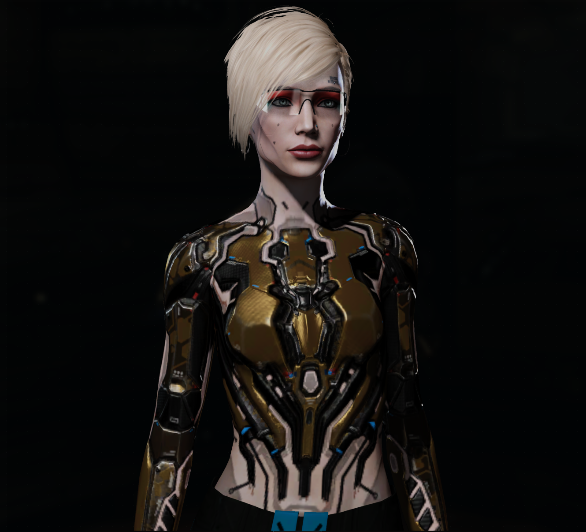
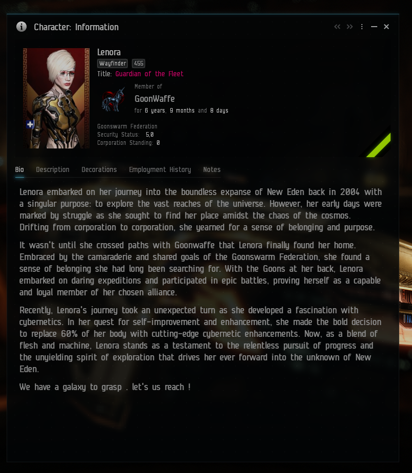

LENORA
Guardian of the Fleet
“We have a galaxy to grasp. Let's us reach!”
A capsuleer whose journey began in 2004, shaped by exploration, alliance and a fascination with cybernetic enhancement.
CivireGoonWaffeGoonswarm Federation
Biography
Lenora embarked on her journey into the boundless expanse of New Eden back in 2004 with a singular purpose: to explore the vast reaches of the universe. However, her early days were marked by struggle as she sought to find her place amidst the chaos of the cosmos. Drifting from corporation to corporation, she yearned for a sense of belonging and purpose.
It wasn't until she crossed paths with Goonswarm that Lenora finally found her home. Embraced by the camaraderie and shared goals of the Goonswarm Federation, she found a sense of belonging she had long been searching for. With the Goons at her back, Lenora embarked on daring expeditions and participated in epic battles, proving herself as a capable and loyal member of her chosen alliance.
Recently, Lenora's journey took an unexpected turn as she developed a fascination with cybernetics. In her quest for self-improvement and enhancement, she made the bold decision to replace 60% of her body with cutting-edge cybernetic enhancements. Now, as a blend of flesh and machine, Lenora stands as a testament to the relentless pursuit of progress and the unyielding spirit of exploration that drives her ever forward into the unknown of New Eden.
We have a galaxy to grasp. Let's us reach!
Origins & bloodline
Lenora is Civire, a Caldari bloodline known in the game's description for focused aggression, competitiveness and the ability to remain composed under pressure. This is the official bloodline framing; Lenora's personal biography is her own capsuleer story.
Cybernetic transformation
Lenora's biography records that 60% of her body was replaced with cybernetic enhancements. Her black-and-gold armored appearance and visible implants are central elements of her visual identity.
Career & honours
Her character information records GoonWaffe membership in Goonswarm Federation for 6 years, 9 months and 8 days at the time of the supplied screenshot, alongside the title Guardian of the Fleet.
Guardian of the Fleet
A cinematic portrait of Lenora. Video presented without audio.

